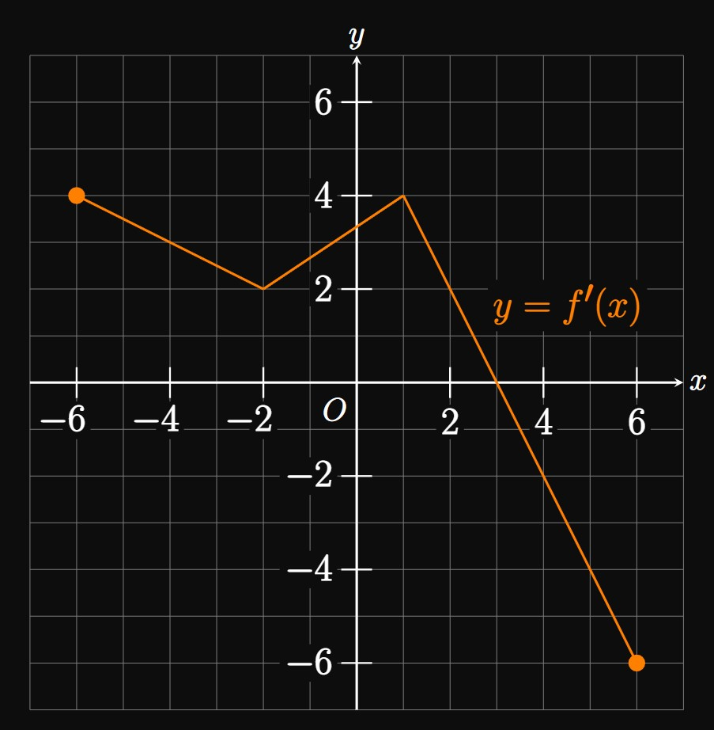

Figure 2 shows the graph of \(y = f'(x)\)
for \(-6 \leq x \leq 6.\)
The graph of \(y = f(x)\) passes through the point \((1, 3).\)
Let \(g(x) = \int_{-2}^x f(t) \di t.\) Find \(g(-6).\)
Identify the \(x\)-coordinates of any critical points of \(f.\)
Classify each critical point as corresponding to a relative minimum,
relative maximum, or neither of \(f.\)
Find \(f(4).\)
At what \(x\)-coordinates does the graph of \(f\) have an inflection point?
Let \(R\) be the region bounded above by the graph of \(y = e^x,\)
below by the \(x\)-axis, left by the \(y\)-axis,
and right by the line \(x = m.\)
How fast is the area of \(R\) changing with \(m\) when \(m = 3 \ques\)
An object on the \(x\)-axis initially located at \(x = -2\)
begins moving with velocity \(v(t) = 8t + 1,\)
where \(t\) is time.
What is the object's position when \(t = 3 \ques\)
A car drives along the \(x\)-axis with an initial velocity of \(10 \undiv{m}{s}.\)
It then accelerates as modeled by \(a(t) = 8 - 2t,\) where \(t\) is time measured in seconds.
Determine the car's velocity after \(3\) seconds.
A tank initially contains \(80\) liters of water.
A hole is poked at the bottom of the tank, and water flows out at a rate of
\(r(t) = (2 - t)^2\)
liters per second.
Find the volume in the tank after \(6\) seconds of leaking.
In filtering a pool,
water is pumped into the pool at a constant rate of \(4\) gallons per minute
and pumped out at a rate of \(6t - 3t^2\) gallons per minute.
Initially, the pool contains \(900\) gallons of water.
Find the pool's volume after \(2\) minutes of filtering.
Let \(g\) be a twice-differentiable function whose second derivative is continuous over \([1, 5].\)
The slope of the tangent to \(g\) is positive at \(x = 1\) and negative at \(x = 5.\)
Show that \(\int_1^5 g''(x) \di x \lt 0.\)
Suppose \(g\) is a twice-differentiable function such that \(g''(x)\) is continuous over \(1 \leq x \leq 4.\)
The line \(y - 3 = -5(x - 1)\) is tangent to the graph of \(y = g(x)\) at \(x = 1.\)
Calculate \(g'(4)\) if \(\int_1^4 g''(x) \di x = 2.\)
Let \(f\) be a positive, continuous function
whose antiderivative is \(F.\)
Consider the area of the region bounded above by the graph of \(y = f(x),\)
below by the \(x\)-axis, left by the line \(x = a,\) and right by the line \(x = m.\)
If \(m\) is doubled, then the area is doubled.
Show that \(F(a) = 2F(m) - F(2m).\)
The function \(v\) is continuous and
has an antiderivative \(V.\)
If \(\int_a^{2b} v(x) \di x = 0,\)
then derive an expression for \(\int_a^b v(x) \di x\)
in terms of \(V\) and \(b.\)
Consider the region in the first quadrant bounded above by the hyperbola \(y = 1/x,\)
below by the \(x\)-axis, left by the line \(x = m,\) and right by the line \(x = 2m.\)
Prove that the area of the region is independent of \(m.\)
Let \(S\) be the region in the first quadrant bounded by the graph of \(y = \sqrt x\)
and the line \(x = m.\)
The value of \(m\) is increasing at a constant rate of \(3\) units per minute.
How quickly is the area of \(S\) increasing with time when \(m = 16 \ques\)
Let \(Q\) be a quantity that changes with time \(t\)
and whose value at \(t = 0\) is \(Q_0.\)
Suppose that \(Q(t)\) increases at a rate of \(f(t)\) and decreases at a rate of \(g(t),\)
where \(f\) and \(g\) are differentiable functions.
Prove that \(Q\) has a relative maximum at the critical number \(t = c\) when \(f'(c) \lt g'(c).\)